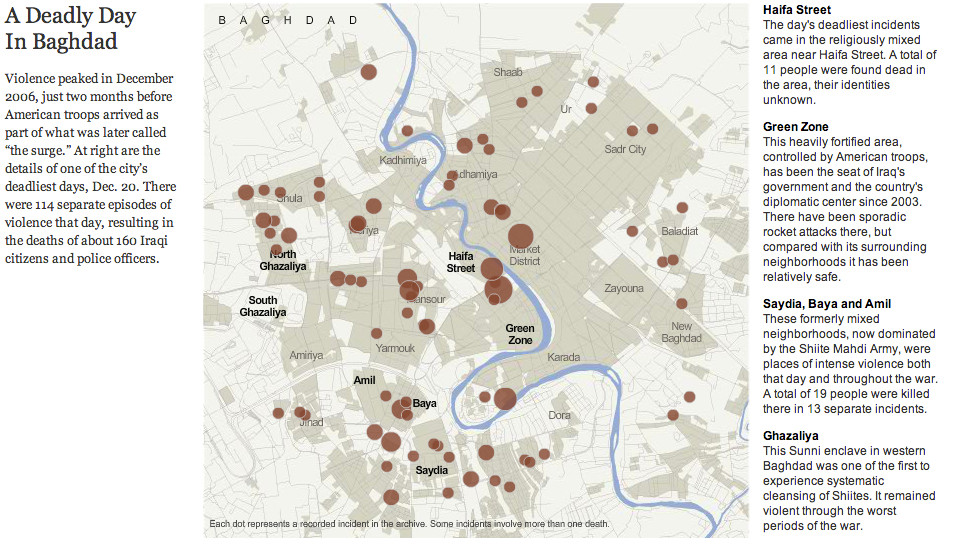
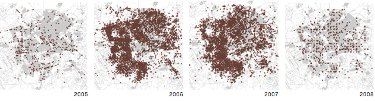

Data Journalism Decoded
What We Do
Just the Facts
Near and Far
The
Far
reveals broad trends
The
Near
presents local impact
Near

Far

Near
Far
Near
Journalism and Government
Further Resources
Other Organizations
ProPublica
NPR
The LA Times
Learning Resources
Source